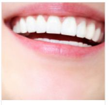

Gum Treatment
- 
Swelling and bleeding gums are caused by the accumulation of plaque and tartar around the teeth. Over a period of time it may cause severe destruction of gum tissue and underlying supporting bone, resulting in bone loss and loosening of teeth. Gingivitis (inflammation of gums), if not treated in time, could lead to periodontitis (inflammation of gums, bone and surrounding tissues that support teeth).
There are various surgical and nonsurgical ways to treat gum diseases and restore the gums to a healthy state and also prevent the further destruction of gums and supporting bone.
Our periodontist will help you solve all your gum problems.
-
Indications for Gum Treatment:
-Redness or swelling in the gums.
-Receding gums causing the teeth to look longer and exposing the roots of the teeth.
-Foul smell from the mouth.
-Mobile teeth.
-Itching sensation in the gums.
Benefits of the treatment:
1.Removes harmful bacteria.
2.Prevents further damage to the teeth and tissues.
3.Improves gum health.
4.Facilitates regeneration of healthy tissue.